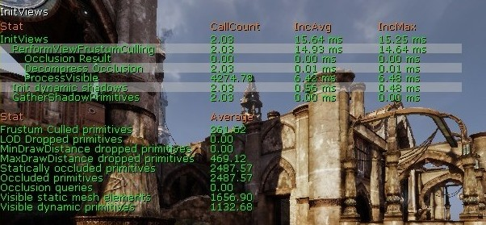
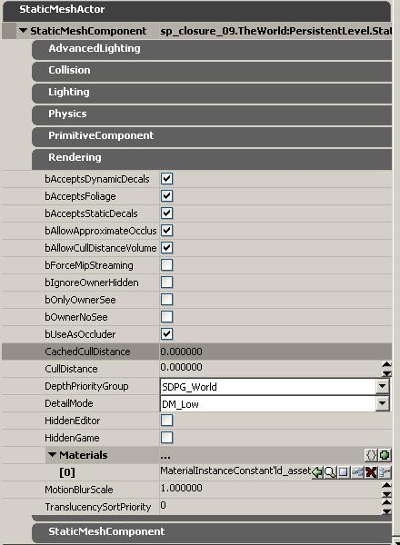
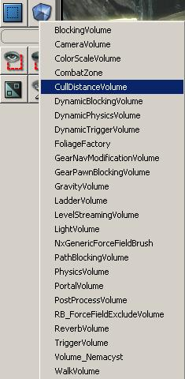
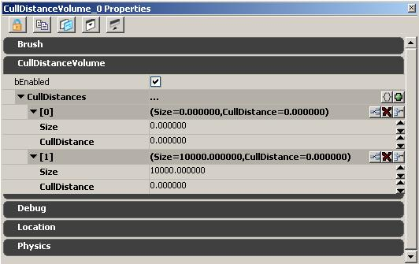

UDN
Search public documentation:
VisibilityCulling
日本語訳
中国翻译
한국어
Interested in the Unreal Engine?
Visit the Unreal Technology site.
Looking for jobs and company info?
Check out the Epic games site.
Questions about support via UDN?
Contact the UDN Staff
中国翻译
한국어
Interested in the Unreal Engine?
Visit the Unreal Technology site.
Looking for jobs and company info?
Check out the Epic games site.
Questions about support via UDN?
Contact the UDN Staff
Visibility Culling
Document Changelog: Created by Daniel Wright.
Overview
- Distance culling
- View frustum culling
- Precomputed occlusion culling
- Dynamic occlusion culling (hardware occlusion queries)
Culling performance
stat initviews shows culling stats, which looks like this:

'Visible static mesh elements' is the single biggest contributor to rendering thread time and should be carefully watched and optimized.
Here are the culling methods listed in order they are applied to each primitive, which is also from least to most expensive in terms of rendering thread cost. - Distance culling
- View frustum culling
- Precomputed occlusion culling
- Dynamic occlusion culling (hardware occlusion queries)
Distance Culling
Cull Distance Volumes
Cull distance volumes are very useful optimization tools. What they do is automatically set a cull distance for all primitives within the volume, based on the bounds of the individual primitives. The cull distance volume value is only used if it is lower than the set MaxDrawDistance of the primitive. The main intention for implementation was to optimize the case of large outdoor maps with detailed indoor bases, as is common in Unreal Tournament 3. You could have very elaborate systems with your cull distance volumes, where different areas have different settings, but in 99% of cases it is probably best to start with a single CullDistanceVolume that encompasses your entire level. Most levels in UT3 use a cull distance volume surrounding the entire level.Relevant Settings
 The following properties affect the way a primitive is occluded and how it occludes other primitives:- bAllowCullDistanceVolumes
- The default is True. When true, the primitive will be affected by Cull Distance Volumes (see below). Cull distance volume information will only override the set MaxDrawDistance of the primitive if the CachedMaxDrawDistance is lower than the set MaxDrawDistance of the primitive.
- CachedMaxDrawDistance
- Not an editable property. This field shows you the cull distance that was set by any CullDistanceVolumes that the primitive is residing inside of. In this property screenshot no cull distance volume was used so it’s set to 0.
- MaxDrawDistance
- Defaults to 0 which means the primitive will never be occluded based on distance alone. Values for MaxDrawDistance are in Unreal Units, so the desired values may vary based on the scale of your project. Cull distance is very useful for very small or very thin objects like trim details or railings that become so small they are barely visible at a certain distance. Play with the cull distance while moving the camera forward and backward to find a spot where the ‘pop’ is not easily visible.
Adding a Cull Distance Volume
 Cull Distance Volumes are added like any other volume type. First, make a brush of the size you want (i.e. Covering the entire level). For more details on making brushes, see the Using BSP Brushes page. Right click on the ‘Add Volume’ button and then select CullDistanceVolume from the drop down list. Now that you’ve created a cull distance volume in the world, select it and press F4 or double click to bring up the actor property box. Here are the properties of a newly created CullDistanceVolume:  There is a single array called “CullDistances” that can have as many points in it as you can add. Each point has a ‘size’ and an associated cull distance. For every primitive that is inside the volume, it will choose the ‘size’ that is closest to the diameter of the primitive’s bounds, and that associated “Cull Distance” will become the primitives “Cached Cull Distance”. All primitives with center points being encompassed by the cull distance volume that have bAllowCullDistanceVolume set to TRUE (default value) will have their used cull distance updated based on the settings of the CullDistances array. It is worth noting that manually setting the cull distance on a primitive will work in conjunction with cull distance volumes as the code internally picks the lower value, unless it is 0. The CullDistances array is a mapping of size (diameter of the objects bounding sphere) to a cull distance to use for this size group and the code will find the closes match and assign the associated cull distance. The default setting for cull distance volumes is to have two entries, Size=0, CullDistance=0 and Size=10000, CullDistance=0. By setting the first CullDistance to 1000 all objects with center points inside the volume that have a bounding sphere diameter of less than 5000 will get an effective cull distance of 1000 and all above will have a cull distance of 0, aka no distance culling. Using a best fit approach was chosen to allow entry of the least amount of data without having to worry about order of array entries. The code doesn't linearly interpolate between cull distances in order to not require inserting dummy points on the high end at which to disable culling without affecting the cull distance for smaller objects. In the case of overlapping cull distance volumes, the engine will pick the most aggressive setting (lowest bigger than 0) for a primitive. For organizational sake, it is a good idea to keep all the sizes in your CullDistances array going from smallest to largest. Use the ‘insert new item here’ button to add intermediate values. When starting a new cull distance volume, it's usually add a couple of new CullDistances with increasing size and Cull Distance. Here’s an example of how the settings might look at first:0: Size: 0 CullDistance: 1000 1: Size: 128 CullDistance: 2048 1: Size: 256 CullDistance: 4096 2: Size: 512 CullDistance: 8192 3: Size: 1024 CullDistance: 16384 4: Size: 2048 CullDistance: 0You can then fly around the level to see if there is any visible popping (or maybe the starting settings are not aggressive enough to being with); and then make slight alterations and possibly add a few new size groups in between the existing ones. It can be helpful to view the ‘Cached Cull Distance’ of various primitives so you can see which size category they are falling into. You can also select ‘Show Bounds’ from the SHOW FLAGS drop down box on the editor viewport toolbar. Then select a primitive and it should render a sphere around it to show the bounds. Press and drag the Middle Mouse Button to draw a ruler across the diameter of the sphere to estimate the bounds. It takes a bit (a lot) of tweaking to get your cull distance volumes right. It is a good idea to have the last item in your list be your ‘too large for cull distance’ value, with a large value for size and 0 for cull distance. This will prevent large mountain or building objects from culling out. You could also simply disable “AllowCulldistanceVolumes” for those primitives but that could be a lot of work.